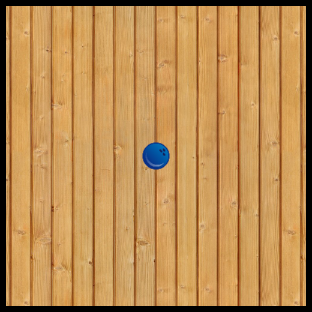
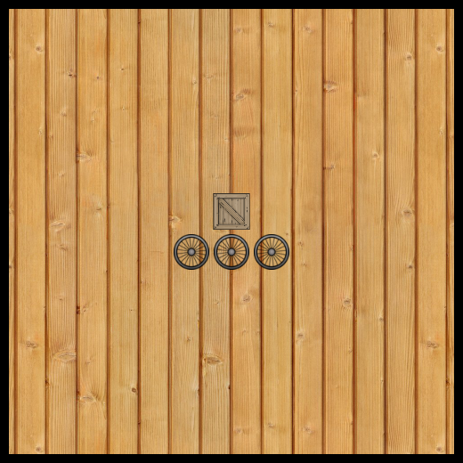
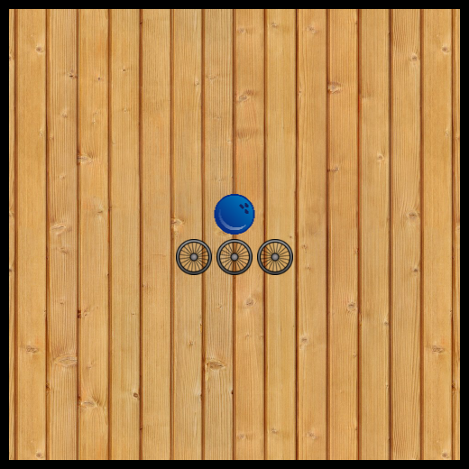
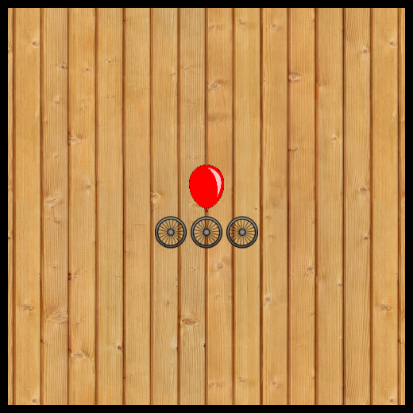
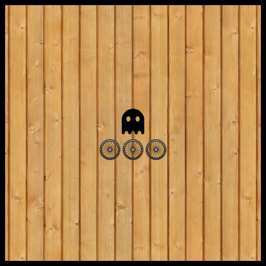
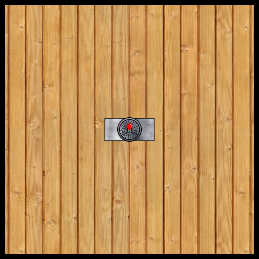

py-fizz
Fun with fizzics!

Py-fizz is a language for creating physics simulations and games. Compiles to Python and runs in the context of Pygame and Pymunk.
Py-fizz is divided into two languages. The first is a higher-level one, used for creating levels and simulations out of pre-built gadgets: e.g. Bowling balls, balloons, motors, etc. Eg.:
(simulate (wooden-level (bowling-ball)))

There is also a lower-level language for defining your own such gadgets. For example, the bowling-ball gadget might be defined as:
(define (bowling-ball) (mass 100000 (make-dynamic (h:bitmap "./imgs/bowling-ball.png"))))
These docs describe both the high and low level languages.
1 Basic vocabulary
Before we start, there are a few basic concepts.
First of all, everything in py-fizz is some kind of physical object. There are three basic kinds: cosmetic, dynamic, and static.
Cosmetic objects do not collide with anything. They are just for show.
Dynamic objects do collide. Also, they can move around.
Static objects also collide, but they do not move around.
There is one other kind of object, which is a "composite" object. This just means that the object is composed of more basic objects.
For example, the car object is composed of three wheels and a crate. The wheels and crate are all dynamic objects. The car is a composite object.
(simulate (wooden-level (car)))

One last critical concept! Objects can be parameterized. For example, the car is a function that takes a speed and/or ANOTHER OBJECT.
(simulate (wooden-level (car 1 (bowling-ball))))

Or...
(simulate (wooden-level (car 1 (balloon))))

Or...
(simulate (wooden-level (car 1 (enemy))))

And so on. You can pass in any basic object to the car function, and you’ll get a new composite object back. You could then pass this new car into any other function that takes a composite object.
For example, maybe you want to be able to shoot a balloon-car out of a cannon...
(simulate (wooden-level (cannon (car 1 (balloon)))))

The image above probably doesn’t communicate exactly how cool this is. Let’s check out a gif...

So that’s the basic idea. You create objects. You make those into composite objects. And you can combine composite objects to get even cooler composite objects.
And so on.
Exercise: Can you figure out how to make a car with a cannon on top that shoots out other cars?
2 py-fizz High Level
The High Level library consists of various gadgets (composite and basic) that all tend to have a consistent look and feel, as well as physical properties that work well together. Many of the gadgets are parameterized, so you can make your own new gadgets with them (like that balloon car shooter seen above).
This part of the documentation lists the provided gadgets and shows you how to compose them to make new ones.
2.1 Basic Gadgets
procedure
(wooden-level object) → composite?
object : (or/c static? dynamic? cosmetic? composite?)
This is just a pretty-looking space for running simulations. There are static walls on all sides, and a cosmetic (wooden) background in the middle. It will dynamically resize if what’s inside doesn’t fit in the default 600x600 space.
procedure
(bowling-ball) → dynamic?
Simple bowling ball. High mass.
No parameters on this one. But you can alter its properties with functions like toggle-static, mass, initial-velocity, etc.
procedure
(crate) → dynamic?
Dynamic crate. Falls by default. If you want to use it as a platform, call toggle-static on it to convert it to a static object.
procedure
(wheel) → dynamic?
Low mass, circular object.
procedure
(balloon) → dynamic?
Floats. (Obeys opposite gravity.)
If it is attached to other objects, it will pull them upward.
procedure
(breakable-balloon) → dynamic?
Like a regular balloon, but it can be destroyed by clicking on it.
It can also be destroyed if it collides strongly with other objects.
procedure
(friend) → dynamic?
A dynamic object that causes you to lose the game if any of them are destroyed. Useful when building puzzles.
procedure
(enemy) → dynamic?
A dynamic object that causes you to win the game if all of them are destroyed. Useful when building puzzles.
procedure
(motor color speed) → dynamic?
color : string? speed : number?
(motor "red" 1)
(motor "green" 1)
(motor "blue" 1)
A dynamic object that rotates continually. Good for vehicles.
Use negative numbers to make it rotate the other direction.
procedure
(pinned-motor color speed) → dynamic?
color : string? speed : number?
(pinned-motor "red" 1)
(pinned-motor "green" 1)
(pinned-motor "blue" 1)
A dynamic object that rotates continually. It’s pinned to one spot. Good for conveyor belts.
Use negative numbers to make it rotate the other direction.
procedure
(catpult object) → composite?
object : (or/c static? dynamic? cosmetic? composite?)
(catapult (crate))
(catapult (car))
(catapult (above (bowling-ball) (bowling-ball)))
Makes a see-saw contraption, on one side is a bowling ball with a strong downward starting velocity. On the other side is whatever object you supply.
Note that although this function accepts static, dynamic, cosmetic, or composite objects, it is most exciting when you pass in a dynamic object (or a composite object that contains dynamic objects).
procedure
(car [speed object] join-object) → composite?
speed : number? = 1 object : (or/c static? dynamic? composite?) = (crate) join-object : (or/c static? dynamic? composite?)
(car)
Makes a car. You can control speed and direction with the speed parameter (negative numbers go counter clockwise).
The second parameter controls what object is on top of the car. Passing in a dynamic object is the simplest thing.
(car 1 (bowling-ball))
If you pass in a static object, the car will be stuck in the air, "pinned" by the static object. Usually not what you want. (Use toggle-static to switch your static object to a dynamic one before passing it into the car function.)
(car 1 (toggle-static (cannon)))
ADVANCED USAGE: If you pass in a composite object, you pust also pass in a join-object as the third parameter. This determines which part of the composite object to connect the wheels to.
(let ([c (crate)]) (car 1 (balloons-pulling 10 c) c))
(let ([c (crate)]) (car 1 (car 1 c) c))
Let’s take a moment to see how cool it is to be able to make flying cars...

procedure
(pipe width height) → dynamic?
width : number? height : number?
(pipe 100 10)
Makes a dynamic rectangle that looks like a pipe. Good for platforms, walls, falling pipes, etc.
procedure
(balloons-pulling num object [string-length]) → composite?
num : number? object : (or/c dynamic? static?) string-length : number? = 100
(balloons-pulling 4 (pipe 100 10) 50)

Attaches the given number of balloons to the given object. The length of the balloon string can also be configured.
procedure
(conveyor-belt num [speed]) → composite?
num : number? speed : number? = 10
(conveyor-belt 5 -10)
(conveyor-belt 5 10)
Creates the given number of motors in a horizontal row. The speed determines three things: the speed (obviously), the direction (negative is counter-clockwise), and the color (blue for counter-clockwise, red for clockwise).
procedure
(v-space num) → cosmetic?
num : number?
(above (bowling-ball) (v-space 10) (bowling-ball))
procedure
(h-space num) → cosmetic?
num : number?
(beside (bowling-ball) (h-space 10) (bowling-ball))
procedure
(fragments object resolution [ energy destroy-after]) → composite? object : (or/c dynamic? static? cosmetic? composite?) resolution : number? energy : number? = 100000 destroy-after : number? = 50
(fragments (car) 4)
Takes the object and returns a composite object that looks like the original, but is really a bunch of dynamic objects constructed from a sliced up image of the original.
This is how breakable-balloons explode when destroyed.
Note that fragments are computationally expensive. Keep the resolution and the destroy-after parameters low.
procedure
(fragments object [energy angle]) → static?
object : (or/c dynamic? static? cosmetic? composite?) energy : number? = 10000 angle : number? = 0
(cannon (car))
Returns a static cannon that shoots the provided object when clicked.
The angle and the power of the shot can be adjusted.
procedure
(builder object [destroy-self?]) → static?
object : (or/c dynamic? static? cosmetic? composite?) destroy-self? : boolean? = #t
(builder (car))
Returns a static treasure chest that turns into the provided object when clicked. Good for puzzles.